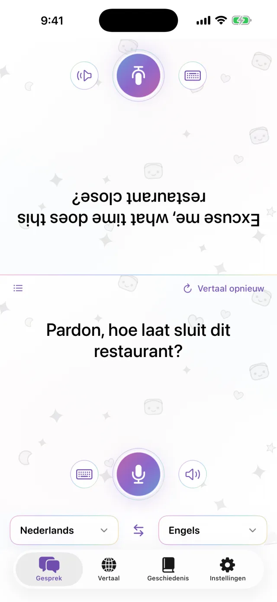
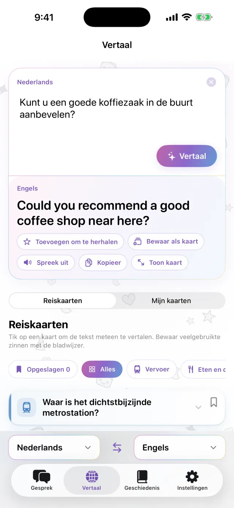
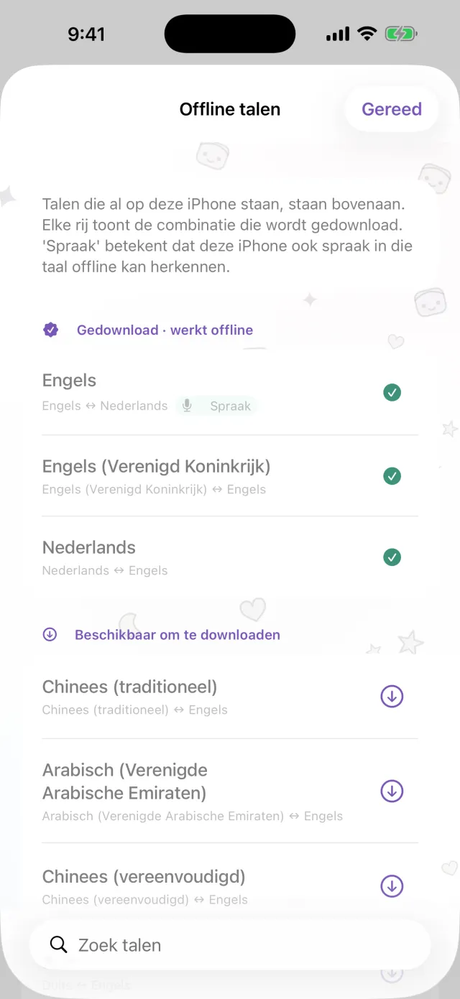
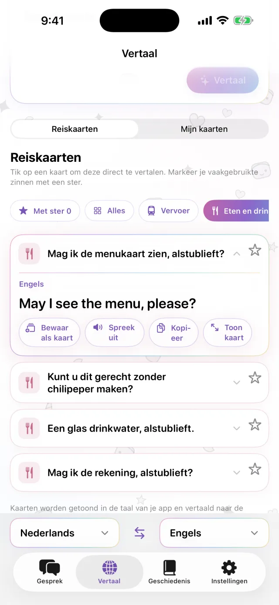
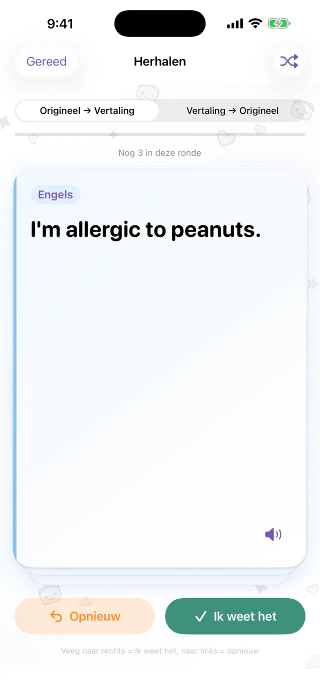

Vertaalapp voor iPhone
Vertaalapp voor iPhone
Leg je iPhone
tussen jullie in.
Meer is het niet.
Tik op de microfoon en spreek. De vertaling verschijnt op de andere helft van het scherm, richting de ander. Als die antwoordt, werkt het op dezelfde manier. Download eerst de talen, dan werkt het ook zonder verbinding.
Binnenkort in de App Store- Ongeveer 20 talen
- Offline na het downloaden
- Geen account nodig

Typen
Liever niet hardop praten? Typ het.
Op een stille plek, of als de ander te snel praat, typ je de zin gewoon. Je kunt de vertaling schermvullend tonen en aan de ander laten zien.
- Kopieer de vertaling of laat haar voorlezen
- Wissel de twee talen met één tik om

Offline
Vertalen zonder verbinding
Vertalen, spraakherkenning en voorlezen gebeuren allemaal op je iPhone. Download de talen die je nodig hebt voor je vertrek. Dan werkt het in het vliegtuig en ook voordat je een simkaart hebt gekocht. Wat je zegt wordt niet naar een server gestuurd en opnamen worden niet bewaard.

Zinnenkaarten
Bewaar wat je steeds weer zegt
Het adres van je hotel, een voedselallergie, het station dat je zoekt. Bewaar ze als kaart, dan hoef je ze niet steeds opnieuw te typen. Tik op een kaart en de zin wordt vertaald naar de taal van de ander. Kant-en-klare Reiskaarten voor vervoer, eten, overnachten en winkelen zijn inbegrepen.

Pro
Herhaal bewaarde zinnen op het juiste moment
Tik op de ster bij een zin om hem te bewaren voor herhaling. Weet je de zin nog, dan komt hij terug na 1, 3, 7, 14 en daarna 30 dagen. Weet je hem niet meer, dan zie je hem dezelfde dag opnieuw. Je kunt van de oorspronkelijke tekst naar de vertaling oefenen, of andersom. Dit onderdeel is er alleen met Pro.

Handig bij
- Bestellen in een klein restaurant
- Een taxichauffeur het adres geven
- Een allergie uitleggen bij de apotheek
- Tassen achterlaten bij de hotelbalie
- De weg vragen
In 30 seconden bekeken
In deze video staat de vliegtuigmodus aan.
De basis
| Talen | Ongeveer 20 (de talen die Apple op het apparaat vertaalt) |
|---|---|
| Offline | Ja, na het downloaden van de talen |
| Spraakinvoer | Ja. Bij sommige talen kun je alleen typen |
| Account | Niet nodig |
| Prijs | Gratis. Pro kost extra (zie hieronder) |
| Vereist | iPhone met iOS 18 of nieuwer |
- De eerste keer heb je een verbinding nodig om talen te downloaden.
- Prijzen worden in de App Store in je eigen valuta getoond.
Gratis en Pro
Gratis
- Gesprek van aangezicht tot aangezicht
- Typen en schermvullend tonen
- Offline vertalen
- Reiskaarten en 3 eigen kaarten
- Kleine banneradvertentie
Pro
- Geen advertenties
- Zoveel kaarten als je wilt
- Vertaalgeschiedenis en gespreide herhaling
Per week, per maand of eenmalig te koop.
Download de talen voordat je op reis gaat.
Binnenkort in de App StoreiPhone · iOS 18 of nieuwer · Gratis te downloaden · Zo werkt elk scherm